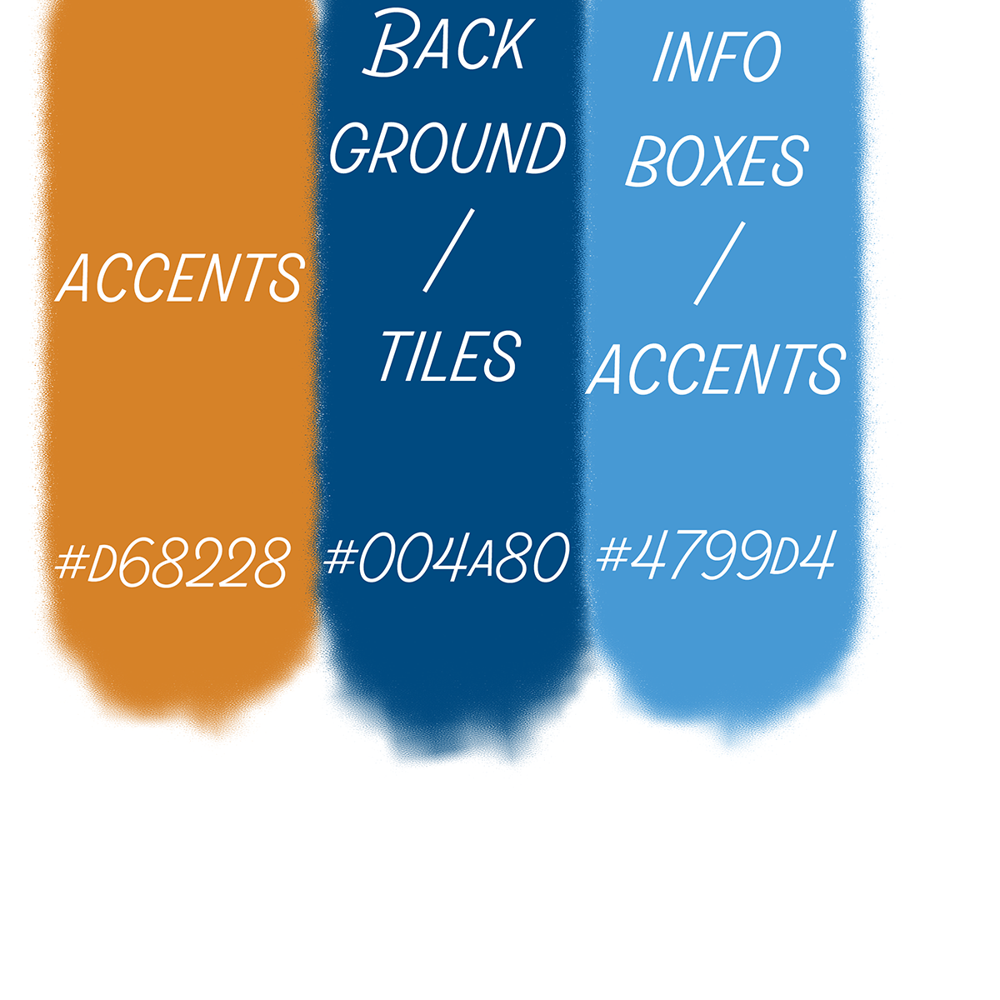
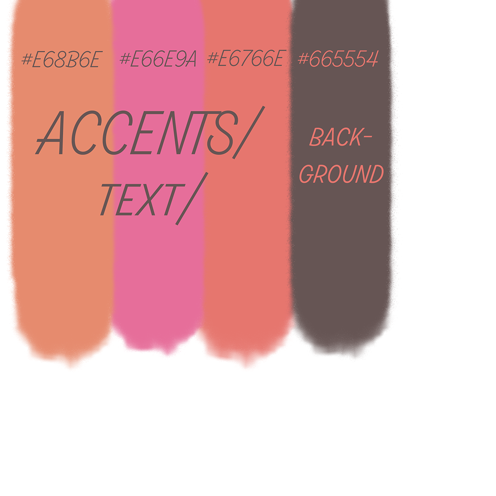
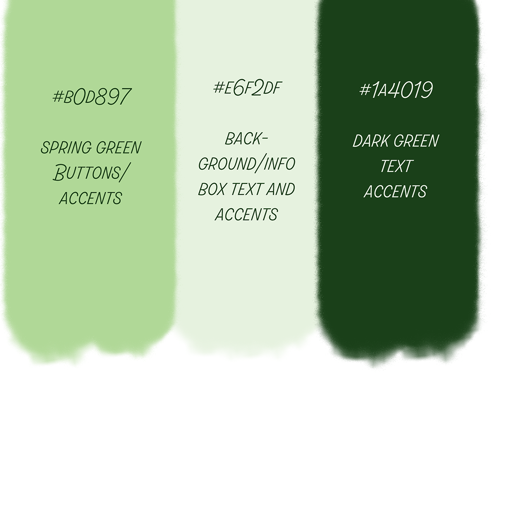
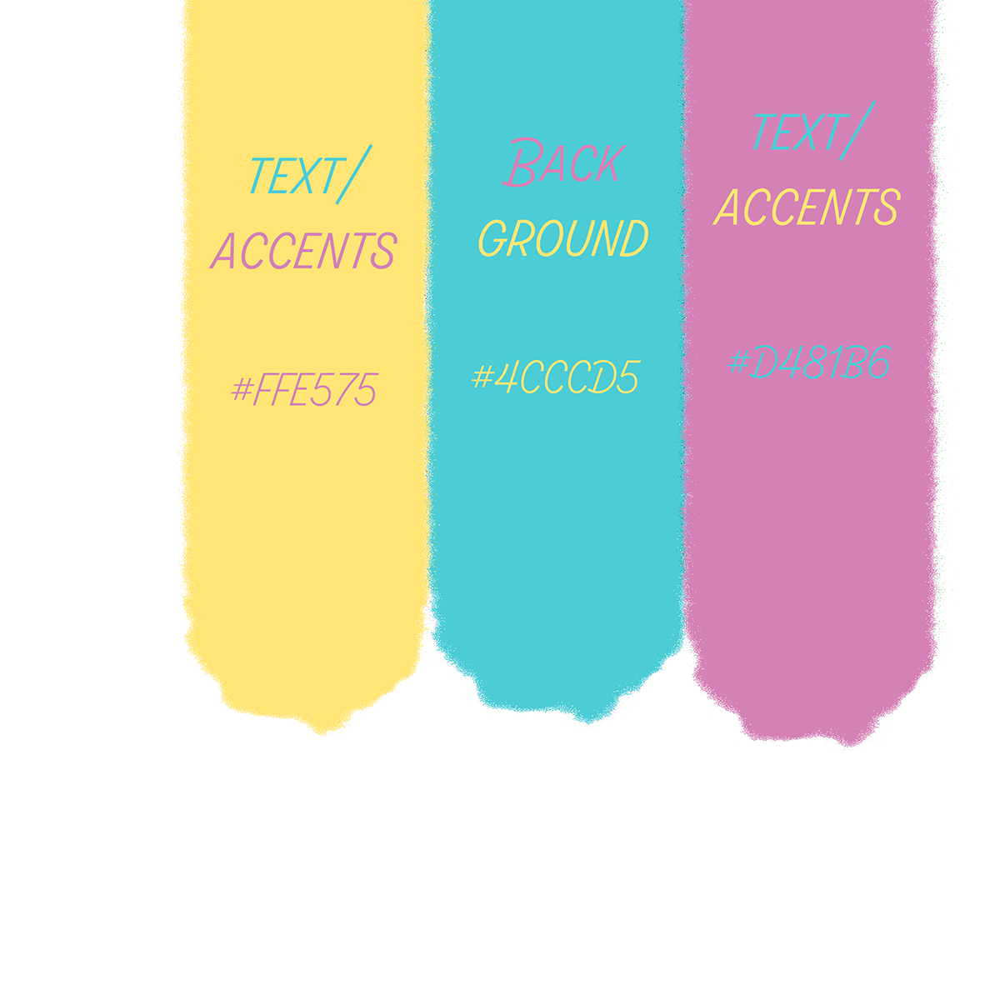

Color Themes
Heres a table of a few different color themes representing various types of color schemes.
| Theme Style | Main Color | Secondary Color | Accent Color(s) | |
|---|---|---|---|---|
| Complementary Theme | #004A80 | #4799D4 | #D68228 | |
| Analogous Theme | #665554 | #E6766E | E68B6E | #E66E9A |
| Monochromatic Theme | #E6F2DF | #1A4019 | #B0D897 | |
| Split Theme | #3866B6 | #F5A749 | #F5D249 | #5E6675 |
| Triadic Theme | #4CCCD5 | #D481B6 | #FFE575 |
Complementary Theme
Complementary colors are pairs of colors that, when combined, cancel out by producing a grayscale color like black or white. When placed next to each other, they create the strongest contrast and reinforce each other. In the traditional color wheel, which is based on the RYB (Red, Yellow, Blue) color model, complementary colors are located directly across from each other.
Analogous Theme
Analogous colors refers to groups of colors that are next to each other on the color wheel. These colors usually match well together and create serene and comfortable designs. The analogous colors are those directly adjacent to that chosen color, typically spanning a section of three to five hues.
Monochromatic Theme
Monochromatic colors refers to groups of colors that are composed of various shades, tones, and tints of a single hue. Creating a monochromatic color theme involves selecting a base hue and modifying it by adding black, white, or gray to produce different shades, tones, and tints of the selected base hue.
Split Complementary Theme

Split colors, a fundamental concept in color design, involves using variation of color families to create visual interest and visual harmony. This technique focuses on splitting complementary colors by incorporating analogous hues, which helps generate a more dynamic and visually appealing composition. Split colors are made by selecting a primary color and then two colors adjacent to the complementary color on the color wheel.
Triadic Theme
Triadic colors are a group of three colors that are evenly spaced on the color wheel. This scheme is known for its vibrant and harmonious feel, as it balances the use of colors while maintaining contrast and richness. One of the most common ways to use triadic colors is to choose a dominant color, and use the other two as accents.